40 Years a Musician
Originally published August 17, 2025 at fakeronjan.com as a birthday retro
(Mario Paint Music Guy began on September 2, 2025)
40 years ago, I became a musician. I took my first piano lesson, and that was it. Music was going to be the driving force for everything I did the rest of my life.
And so it was!
And then it wasn’t. It very, very wasn’t.
So here I am, four decades later, trying to reconcile one hard truth. Even after all this time, playing music is probably the thing I do best in the world, but I don’t really do it.
As I conclude trip #43 around the sun and thus put out another birthday retro, I present to you that story.
I was three years old, and as the family lore tells it, I was a troublemaker and a half. If there was an object in the house, I was going to break it. Have a VCR? I’d stuff balloons in it. Have a typewriter? I’d take white-out and obscure all the keys. You get the deal.
I needed something, anything to stop destroying everything. So it was ordained, I would learn music, to save the house!
I went to Beverly Fest’s house in Boulder, Colorado. I don’t remember the encounter. Was she the first teacher I’ve ever had of any kind? Probably. Was I in diapers? I hope not, but I can’t be sure. Give me a break, remember I was three.
What I do know is that she was my teacher for five years, from the summer of 1985 through the summer of 1990. And she taught me how to love music, how to love playing music, and how to love being a musician.
She set a high standard, but made sure it was fun. Practice for 200 days in a row? You get a choice to go out for ice cream or to see a movie with her. I always picked the movies. The Little Mermaid one time, Teenage Mutant Ninja Turtles another.
And so my musical journey began. And not just for the movies.
I was blessed early on with perfect pitch, the ability to identify which notes are being played just by listening to them. This allowed me to learn pretty much anything by ear, and that superpower was a key springboard.
The other key element was the stage. I loved it. I spent my entire first solo piano recital staring at the audience while playing, hamming it up. As the family lore tells it, they called me “little Liberace”. I’m not sure who “they” were, but I’ll take it.
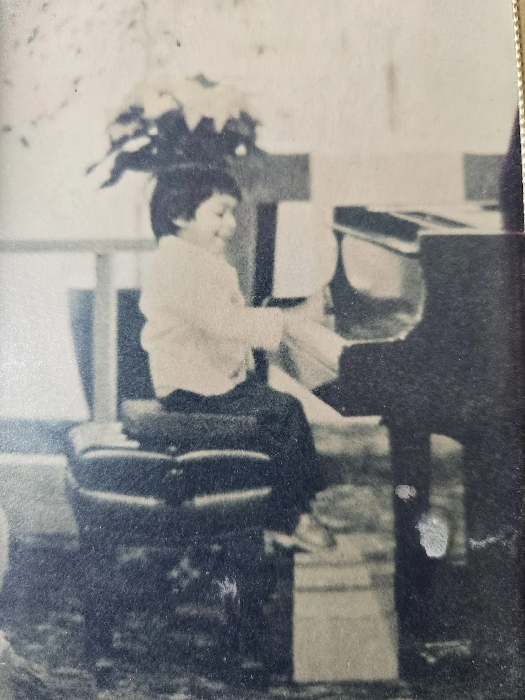
I loved performing, I loved the attention, I loved the reactions. I even loved the nerves right before a performance that brought a level of focus I never had when practicing.
I was stunningly small as a child, which helped play into the audience effect. How can someone this small even do this? I knew they were thinking this. I wanted them thinking this. I was a magician, and this was my magic trick.
I shot out the gate quickly, and soon I was playing Mozart and Bartok at piano festivals.
Shortly after starting on the piano, I started meeting Tony Kallet. He called himself a music theory teacher, but he really taught his students how to find the fun and beauty inherent in music itself. “You don’t need a stage and an audience to have fun, Ronjan!”
Tony would come up with nicknames for everyone. He called me “John Ron”. What can I say, it made me laugh at age four.
Every week, I’d go to his house and we’d jam, we’d compose, we’d experiment. I wrote a suite of Monkey Dances that were the center of this for a while.
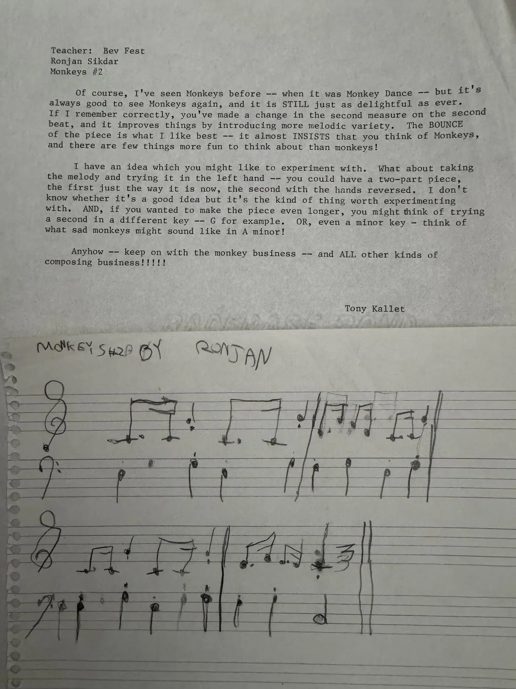
Later, with his encouragement, I wrote a little piece I was truly proud of, Musette in C. I’m pretty sure it wasn’t technically a “musette”, and it was a bit derivative of the Mozart Sonata I was practicing for Mrs. Fest, but he kept pushing me. He brought the best out of me.
I’d start writing other pieces with my sister in “off hours”. Journeys on the Porch. Spooks. Raindrops, which was originally called Flowers. I can’t wait for Tony to hear them!
And then we lost Tony.
I can still picture my last lesson, as he winced to smile while holding a heating pad against his stomach. The cancer got him.
A few weeks later, at his funeral, we told stories. We heard about the nicknames he came up with for everyone else. He called Jennifer “Jenniflower”. I didn’t know Jennifer, but I still remember “Jenniflower”.
We didn’t really get to say goodbye, not properly. He’ll never get to hear me play Journeys on the Porch. But while we lost him, we all found the fun and beauty in music. Cancer can’t take that away.
At six it’s time to up the ante. I’m going to learn another instrument. Let’s start the violin!
I honestly can’t tell you how this happened. Did my parents think it would be a nice way to continue investing in my interests? Did I say I wanted to learn a new instrument?
However it happened, I do vaguely remember standing in the house of Mrs. Ellie Albers for my first violin lesson, only I didn’t actually get to play the violin.
First, you have to learn how to hold the bow. Then, how to hold the violin. Then, back to the bow. Back to the violin. Rinse and repeat for what felt like a thousand times.
Then, you finally put them together and it sounds awful. You realize that this isn’t “baby’s first instrument”. This is going to take some time to put together.
I was up to the task. I started on the same Twinkle Twinkle Little Star variations that I knew from the piano. I worked my way through the Suzuki books.
I vividly remember a group recital where we played the Witches’ Dance while also doing the witches’ dance. Playing with other people was new. I loved it.
While I don’t come from a family of professional musicians, I do come from a family of music lovers. And Bengali music was everywhere growing up.
We listened to tapes of Rabindranath Tagore and Kazi Nazrul Islam. We saw singing, dancing, and musical performances of their work at various Puja celebrations. And eventually, we participated in them too.
Sometimes we sang. “Oray greeho bahshee”, or “aire chutay ai”, whatever these words meant.
Sometimes we danced, the boys clomping around as the girls moved gracefully.
And many times, we played. Sometimes I played on the keys solo. Sometimes I was on the keys when others sang. Sometimes my mom and I would play the violin together. Sometimes it’d be me on the keys and my sister on the cello. Every configuration was different, and that kept it fun.
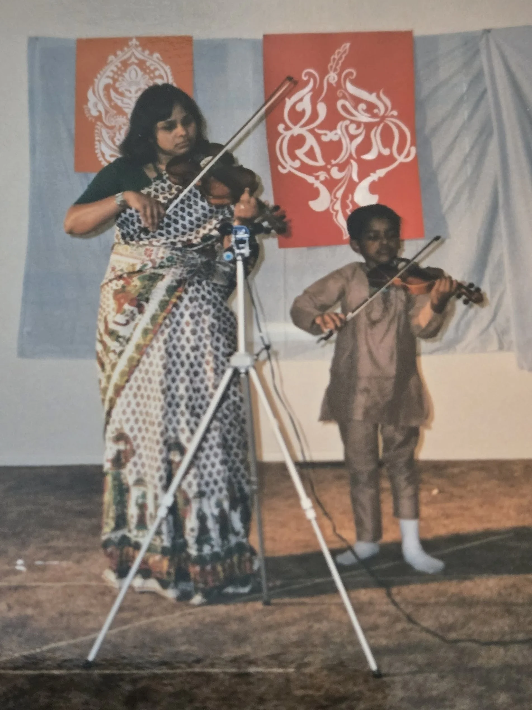
At some point, I somehow got featured on TV in India to perform Bengali music solo on the keyboard there. I was proud to rep my culture with the thing I do best.
I moved from Boulder to Cincinnati in 1990, so I needed a new piano teacher. I started up with Bloom Lippmann, and she built on the work Mrs. Fest did, helping me find my style and play my best.
Mrs. Lippmann recognized early on that I was starting to develop a real competitive fire. She had strong instincts and inherently knew when to push when I was half-assing it, and when to back off when I was beating myself up and didn’t need piling on.
I’d grown out of my “big music out of a small person magic trick” phase, and had started to become a bit more intense and dynamic of a performer. This meant sacrificing some technical precision, being totally fine with missing notes here and there, and really going for it during live performances.
Much to Mrs. Lippmann’s chagrin, this also meant that I was never going to practice enough that a piece could come out of my fingers on autopilot. Nope, it was going to come together live on stage in ways that neither she nor I would hear in practice.
And it always did come together. Adrenaline and stage presence would rule the day, and we’d move on to the next one. Now, it was time to start climbing the competitive mountain.
After the move to Ohio, I also needed a new violin teacher, and Jacquie Fennell answered the call.
Mrs. Fennell is responsible for the best motivational technique of any music teacher I have ever had. She told me that if I practiced well for a month, I could have a Shaquille O’Neal rookie card. Done and done!
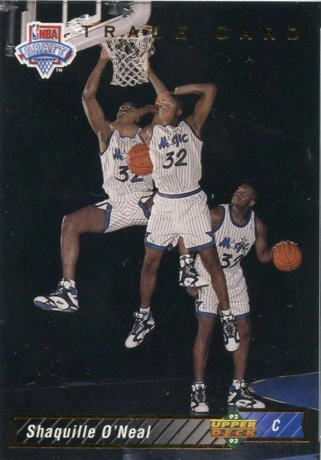
Before Shaq entered the NBA, though, Mrs. Fennell did something far more important. She also got me excited about the concept of performing for a youth orchestra called the Cincinnati Junior Strings that accepted students through 9th grade.
After 3rd grade, Mrs. Fennell suggested that I audition. It’s selective, so I probably won’t get in for 4th grade, but I’ll know the whole process and I’ll probably be in by 5th grade.
Nope! CJS said yes and took me on as their youngest violinist. Looking back, I was probably a reach pick, this shrimp whose legs were too short to reach the floor from his seat, but I’ll take it.
The maestro of the Cincinnati Junior Strings was one Dr. Gerry Doan, a funny and quirky man who dressed the orchestra up in trademark red suspenders. You knew that at least once a year Dr. Doan would get too excited and start conducting a piece 20% faster than intended, with everyone in the orchestra exchanging looks that said, “oh, shit, I guess here we go”.
Dr. Doan would have been the face of the orchestra if not for our concertmaster, the legend himself, Tim O’Neill.
I was 9, a baby, and the last one in the orchestra, so bad that I actually had 3rd violin parts written out for me. Tim was 11, the next youngest violinist in the orchestra, and already the best musician in the room, so good that he had solos written out specifically for him.
Tim was the guy you wanted to be while knowing you never could. How do you catch up to someone who’s driving faster than you?
That said, I got to know Tim. The CJS were going on a trip to Hong Kong, Guangzhou, and Singapore that summer. And Tim and I were roommates on that trip!
We played cards. We played Game Boy. We played the violin in the same orchestra. Even the legends of the world are human. It was an amazing time.
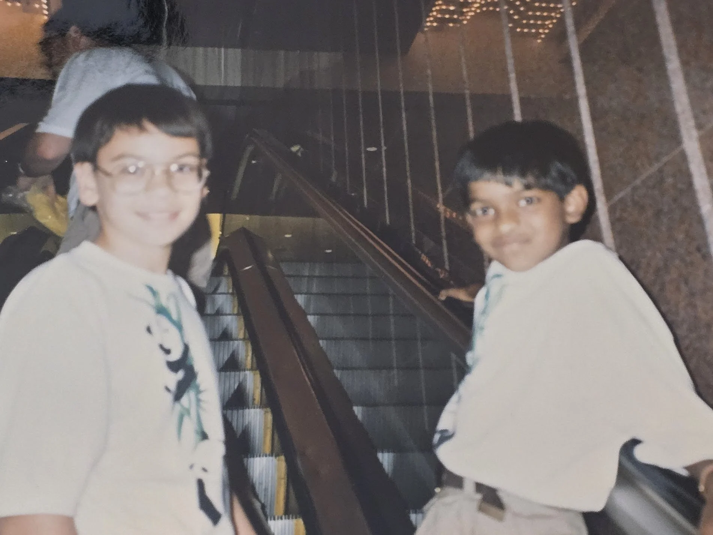
Now entering 5th grade, my middle school has an orchestra too. I didn’t want to join. I’d literally just performed in Asia with the A team. Now I was supposed to play with a bunch of beginners? We wouldn’t even get to do the Witches’ Dance?
Mr. David Smarelli had a tough job. He led the orchestra program for the school district across middle, junior high, and high school. He had to balance people who are on day one, just like I was at Mrs. Albers’s house 4 years ago, with people like me now who’d been playing for years.
Mr. Smarelli made a good pitch. He knew that I loved playing with other people, that I loved the orchestra. Now I could play in one every day at school. If I didn’t like it, I could quit, no hard feelings. Just give it a try.
One day early on, I asked to be excused, saying “I think I’m going to laugh” after someone else played. Yikes. You’re kind of an asshole, Ronjan.
I did come back after a few minutes. I loved the orchestra.
School orchestra wasn’t just an orchestra. It was a series of partnerships with some of my favorite people in my life.
Matt Thornton lived across the street from me. Both of his parents played in the Cincinnati Symphony Orchestra. I’d go to his house after school to play Sega Genesis while waiting for my mom to come home from work.
Now in 5th grade orchestra, Matt and I were partners. As Mr. Smarelli focused on teaching newer musicians, Matt and I worked on duets, him on the cello. We’d get special spots in school performances to show off what we can do.
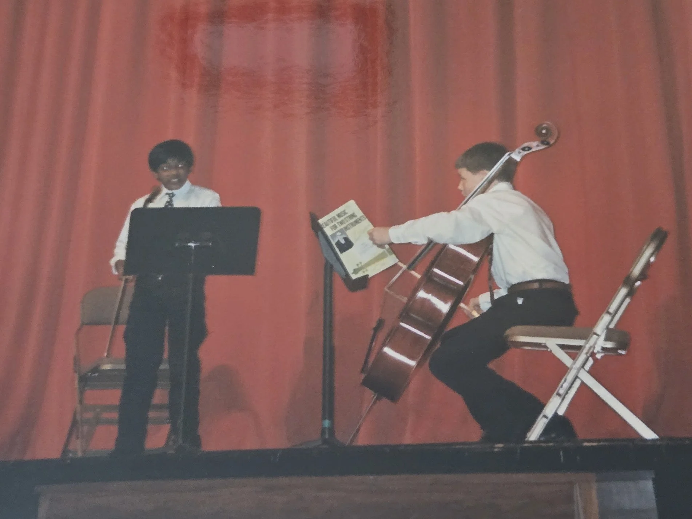
Silvia Li and I became friends after I said something rude to upset her and wrote her an apology note. She accepted my apology in a note back, and we just kept writing and passing notes to each other from then on.
Soon after, Silvia and I were stand partners in the junior high orchestra. No one knows your habits like your stand partner. When you like the page turned, which bowing or fingering instructions you ignore, just generally what makes you tick.
To this day, that understanding is still there. Every once in a while Silvia will text me a music meme she uniquely knows will hit the mark, and it always does.
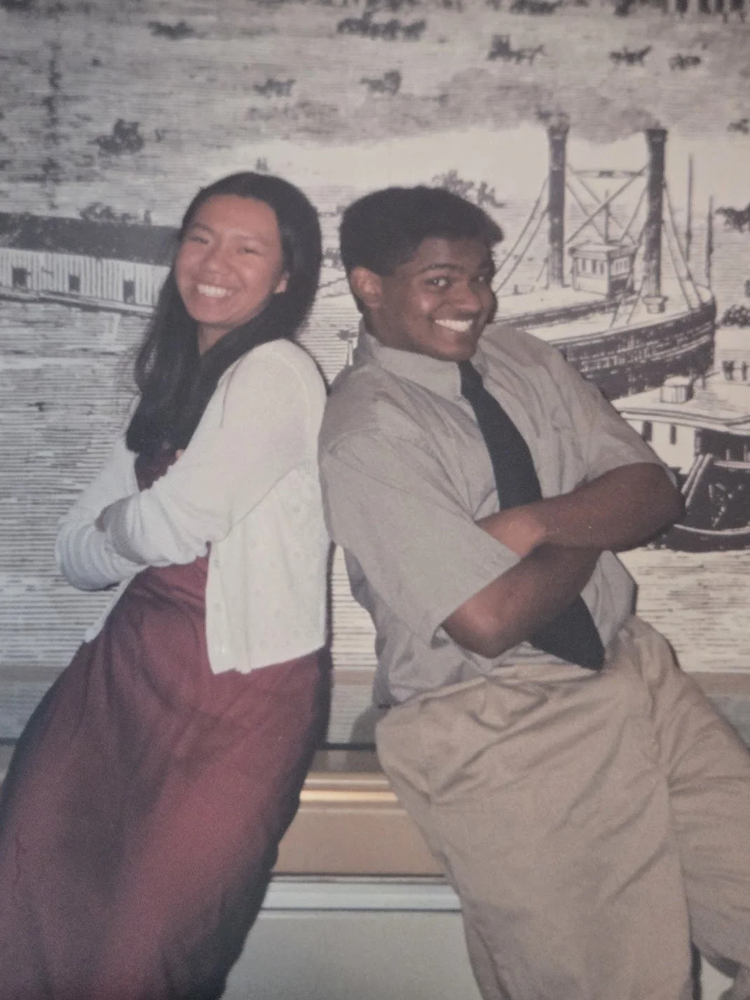
Keegan “Casey” Dwyer moved to Ohio from Massachusetts and brought incredible energy to our group. Keegan was passionate and playful, bringing the fun every day. His vibe reminded me of Tony Kallet.
In high school, I joined the chamber orchestra to play more with Keegan. We joined the orchestra council together, although I can’t remember if we passed any life-changing orchestra legislation.
Many years later, I somehow ended up in a fiddle bar in Covington, Kentucky, hammered, playing the violin with him on stage. That was my last public violin performance, but it was a blast.
Back to piano, and back to 3rd grade. I’m climbing that competitive mountain.
I won the 1991 Ohio Music Teachers Association competition for the 3rd grade and under division. That fueled the fire.
At this point, I am quite literally playing to win, motivated by awards and recognition. My parents are actually trying to pull me back. My dad doesn’t want me to entertain a career in music, and my mom is worried I’m in it for the wrong reasons. I don’t listen. Let’s keep going.
Juliana Han was the Tim O’Neill of the piano. Unbelievably talented, skilled, disciplined, in total control of the instrument, and she put in the work. That was the word on the street, at least. If you want to come at the king, you best not miss.
In 1992, I was in the 4th-through-6th grade division of the OMTA competition I won the previous year. I came in 3rd. Juliana won. In 1993, I came in 3rd again. Juliana won. Later in 1993, the Clifton Music Club had a competition. I took 2nd. Juliana won.
I came at the king and I missed. I’m playing for 2nd. It’s sobering. But it’s good to know, too.
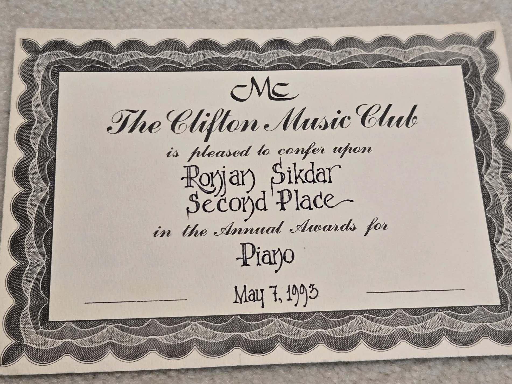
In 1994, Juliana moved up a division. It was my time to reclaim the OMTA title. No, I still finished 3rd.
Later in 1994 I entered the World Piano Competition which, let’s be clear, is not actually a global competition. I took the silver medal in my division. I took another swing at the World Piano Competition in 1995. Silver medal again.
2nd place is my high water mark. It just is. Which isn’t to say that I was miserable here.
The World Piano Competition silver medals brought radio and TV interviews, plus I got to perform at a winners’ concert twice at the Weill Recital Hall at Carnegie freaking Hall!
I wasn’t playing to win when I was on stage at Carnegie Hall. I was back to playing for the crowd.
At that moment, I realized my parents were right. I was doing it for the wrong reasons, and I didn’t have what it takes to make a career out of playing the piano.
Was the violin the bet now? Probably not as a career move, but I realized it was becoming my lead instrument.
I was still in the Cincinnati Junior Strings, and after 7th grade, we took a trip to Australia. All these worlds are colliding. Juliana is in the orchestra. And just like Tim, she’s just a flat out cool person. Matt Thornton is my roommate this time.
In 8th grade, I had my best violin solo performance ever. I’m playing Mozart’s Violin Concerto No. 4. We forgot to number the measures of the manuscript for the judges, so Mrs. Fennell has to give her accompanist part to them. Now I am flying solo, just me and the judges. And I’m nailing it. I can actually see heads popping through the door to watch me play. I get the highest rating.
I actually registered the thought in the moment. I have peaked.
After 8th grade, it’s transition time.
First off, it’s time to move up to the high school orchestra. Guess who’s there? Matt Thornton and Silvia Li and Keegan Dwyer, of course, as we’re in the same grade. But guess who else is there? Tim O’Neill and Juliana Han.
I haven’t seen Tim in years. I’m excited. He’s still as good as ever, the concertmaster as usual, but he’s brought a new playful swagger to the table. He, too, reminds me of Tony, cracking music jokes left and right. It’s fun to be around.
The school orchestra that 4 years ago I was worried about joining is now an unbelievable confluence of some of the most talented people I’ve ever known. Thanks for recruiting me, Mr. Smarelli.
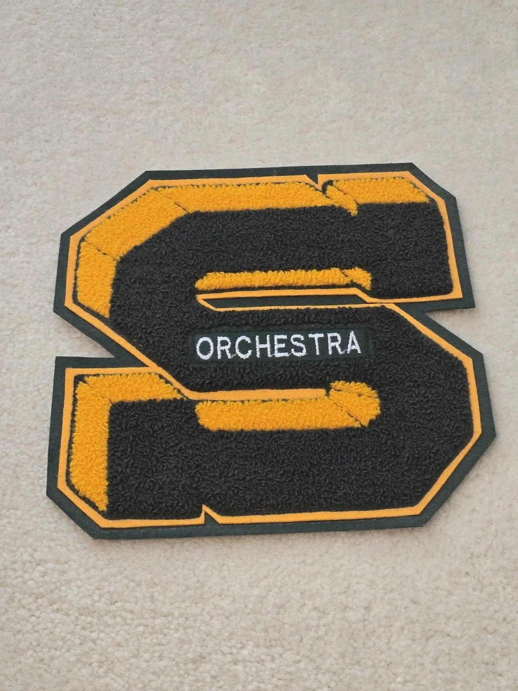
I also needed a new violin teacher again. Mrs. Fennell left the conservatory she taught at and wasn’t allowed to take her students with her. I take a big jump.
Why hadn’t I seen Tim in years before high school? Because after that Asia trip with the Cincinnati Junior Strings, he fully focused on the Starling program, an intense accelerator and chamber orchestra for the highest potential musicians in the city.
Now in 9th grade, I was to join him.
I wasn’t joining because I knew for sure that I wanted to be a musician. Rather, I joined to find out for sure whether I could be a musician.
That summer, I got private lessons from the legendary Alyssa Park. I’d had a massive crush on her, but I powered through my nerves. She was a good teacher. Yet again, a legend is human. I knew she couldn’t be my teacher forever, but I was grateful for that summer.
Sadly, that was the high water mark for my time in Starling.
During one orchestra recital, my stand partner and I were confused on which piece we were playing next, so we were whispering to each other to figure it out. The maestro, Dr. Kurt Sassmannshaus, saw us doing this and took the opportunity at intermission to scream at me in front of everyone for talking in the middle of a performance. “If you keep this up, you’ll fly right out of this orchestra.” Thanks. (To be fair, Dr. Sassmannshaus apologized to me later. No hard feelings!)
The day I realized for sure that I couldn’t be a musician followed shortly after.
Pinchas Zukerman was in town to conduct a master class with the best violinist we had in the Starling orchestra, yep you know it, Tim O’Neill. We were excited to see two greats in a room together, playing together and bringing the best out of each other.
Instead, I watched in horror as Zukerman berated Tim, coming after him for his posture, his technique, his sound, his essence. At least that’s how I took it. Maybe Tim had thicker skin and took it differently, maybe Dr. Sassmannshaus asked Zukerman to come in hard so the rest of us fall in line, maybe they’d actually done these master classes for years and this is just how it always goes.
Well, this style of interaction just isn’t for me. That was it. If being a musician means being treated like this, even once in a while, I’m out, I don’t have what it takes. I also clearly saw that not all legends are humans I want to be around.
After leaving Starling, I needed yet another violin teacher. For two years, that man was Mr. Constantine “Conny” Kiradjieff.
He was a violinist in the Cincinnati Symphony Orchestra but was far enough in his career to be over the bullshit. And he recognized in me someone who’d just been through some bullshit too.
We came to an understanding. We’re going to pretend like I’m learning Mendelssohn for all the other parties, but we’re actually just going to chat for the hour. He’ll tell me stories about his time in the symphony, and I’ll talk to him about how life is going.
We did this for two years. I enjoyed every minute. Eventually, we did the math - it probably doesn’t make sense for me to have a teacher if I don’t want to learn. After 11th grade, we said goodbye. I never said another word to him. May he rest in peace.
I actually joined three new orchestras in 9th grade, the high school orchestra, Starling, and the Cincinnati Symphony Youth Orchestra. So long to the CJS and the red suspenders, hello to the CSYO with full woodwinds, brass, and percussion.
I’ve never had more fun with music than I had in the CSYO, full stop. You have 100 people working towards a single goal, making sound waves that run through each others’ bodies, with the scale that smaller ensembles can’t touch.
Our maestro was Chelsea Tipton II, a handsome, energetic, and passionate conductor who focused on one mantra: “practice makes better”.
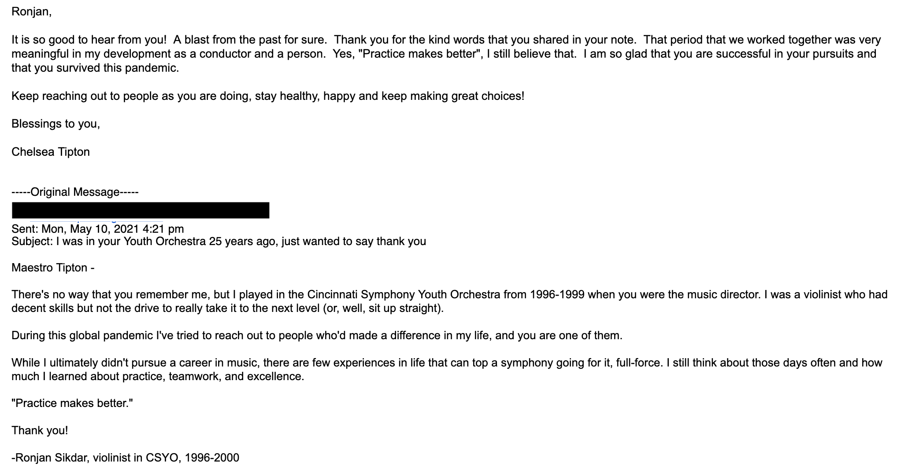
I still remember how beads of sweat would fly off of his head during particularly intense sequences. Can’t blame a guy for getting into the moment, especially since he selected some of the best works in the symphony repertoire. Procession of the Nobles. Capriccio Italien. Jupiter and Mars from The Planets. A Star Wars medley to celebrate the original movies being re-released in the theater. Die Moldau. A medley from West Side Story. And perhaps my favorite of them all, Danse Bacchanale.
The only one I hated was the freaking Stars and Stripes Forever at every Memorial Day concert, because of the brass section. You’re out there working your asses off in the string sections, and then the fucking brass comes in and drowns us all out. Oh well. They can have that one.
After 3 years of Maestro Tipton, Alastair Willis came on for my senior year. He was more technical and understated. “Less tongue, more air”, he’d say to the wind section, whatever that meant. We still played some bangers. Dvorak’s Symphony No. 8, Ruslan and Ludmila, the 1812 Overture. And of course, we still had to play The Stars and Stripes Forever.
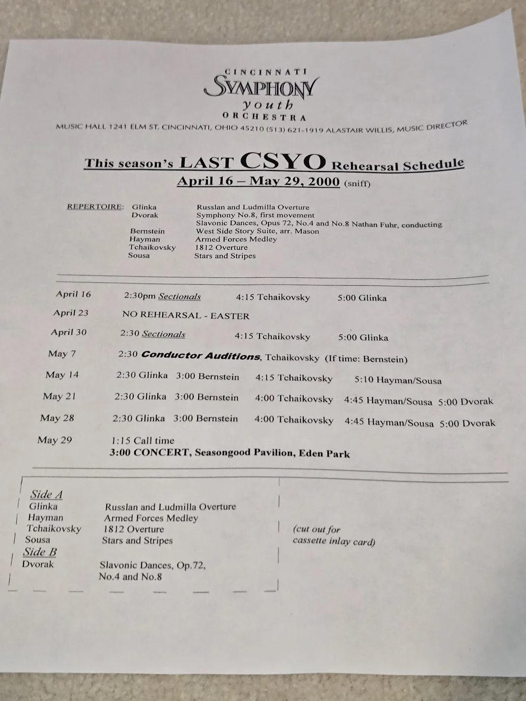
As my fourth year in the CSYO came to a close, it dawned on me that this was it. I wasn’t going to join an orchestra in college. I won’t see anything at this scale again. Ever.
I continued to stay in touch with my Bengali roots by performing at pujas. One year our community adapted Cinderella into a Bengali musical, Chadrapati, and I played all of the music on my keyboard. It was amazing.
In the summer before 12th grade, I notated 12 Tagore and Nazrul songs into a book so Bengali kids in the community could learn how to play them. Then, I recorded an album of these pieces with two Bengali professionals, a sitar player and a tabla player.
It was wild recording 12 pieces in a single day. We recorded violin, sitar, and tabla parts together, and I came back in a 2nd run to add the keyboard. It’s raw, and it’s not a particularly impressive technical achievement by any means. But hey, it’s an album. I’m proud of it.
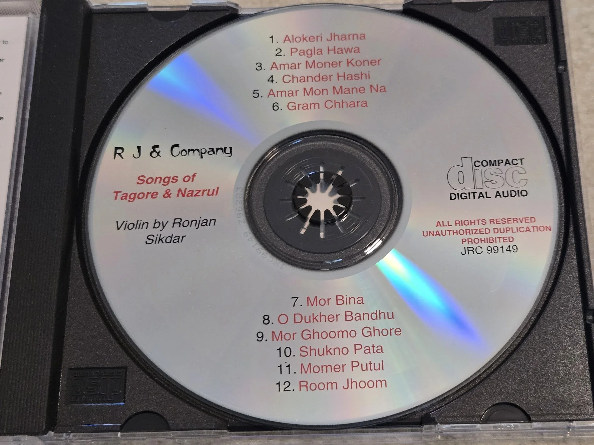
This whole time I’d still been playing the piano. I didn’t even enter competitions anymore. I truly wasn’t motivated by the win, I was back to being motivated by the crowd.
Mrs. Lippmann’s helped me find balance. She encouraged me to take on trickier pieces to challenge myself. Several of the Beethoven Sonatas. A decent amount of Chopin. Liszt’s Hungarian Rhapsody No. 2.
They were fun. I was still doing my usual bit where it comes together live in a way it never did in practice. Everyone’s used to it now.
I had my last lesson with Mrs. Lippmann in 2000 before heading off to college. For ten years, she got the best she could out of me. She pushed me, she kept me going through disappointment, she helped me find a healthy reset, and I’m grateful for everything. May she rest in peace.
After graduating high school, this was the score: I had no piano teacher, I had no violin teacher, I was in no orchestra, and I had no more Bengali pujas to perform at. Just as I’d hit my 10,000 hours in my Gladwell score, I was on my own.
I found ways to keep going. Whenever I was at the Cincinnati home, I’d play the baby grand piano that I picked out back in my competing days. I had to stay reasonably sharp.
As a child I would constantly play Mario Paint for its music composer, and I kept going with that and MIDI software. I continue to do so to this day.
In 2012, I played the keys in a rap music video for a friend’s pepper company. It was fun.
For a while, a couple friends and I started up a band called Full Spectrum that played all different types of music. We were very racially diverse, so we were very proud of the name. Sadly, that band fell apart when we couldn’t find a place to practice in the Bronx without getting yelled at by neighbors. City life.
After turning 40, I decided I wanted to bring music back into a more prominent place in my life.
First, I officially performed for the first time in decades when I played at my sister’s wedding, and so did my son!
Last year, I got my childhood baby grand shipped from Ohio to my home in the Bronx. It was like reuniting with a best friend.
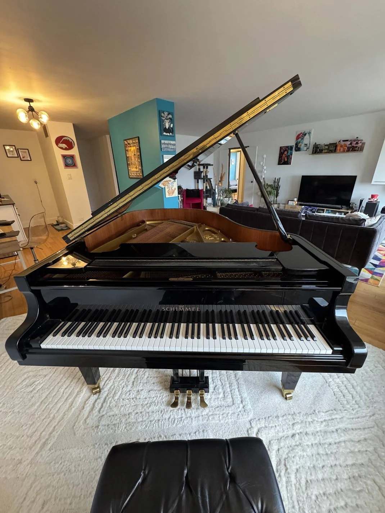
Earlier this year, I performed two duets, one with Damon and one with his teacher. He starts up his own new experience this fall as he will take up the trombone in the band. I’m excited what this means for us playing more together in the future.
In some ways, I feel like I’m better at the piano now than I was 25 years ago. I have a fuller grasp of music itself and that can make up for the fastball I’ve clearly lost at this point.
I can still play most of the Beethoven stuff. Chopin less so. And I definitely can’t play Liszt anymore. But if I go back to playing by ear and just jamming to video game music or K-Pop Demon Hunters? I sound better than ever.
I wish I could say the same for the violin. I tried to pick that up a few weeks ago and it was a disaster. I suppose it’s a real testament to why Mrs. Albers made me learn the basics before picking it up all those years ago.
So where does that leave me, 40 years and 4700 words later?
Well, it’s clear to me that music has never been as important to me as it is today, and that’s precisely because of all of the experiences I’ve had over the past 40 years.
I’m grateful to everyone who’s been part of that story. It’s all a part of me. And even though I still don’t know exactly how I intend to keep in touch with music going forward, I know that I will find a way.
I’m a musician, and it’s the best thing I’ll ever be.